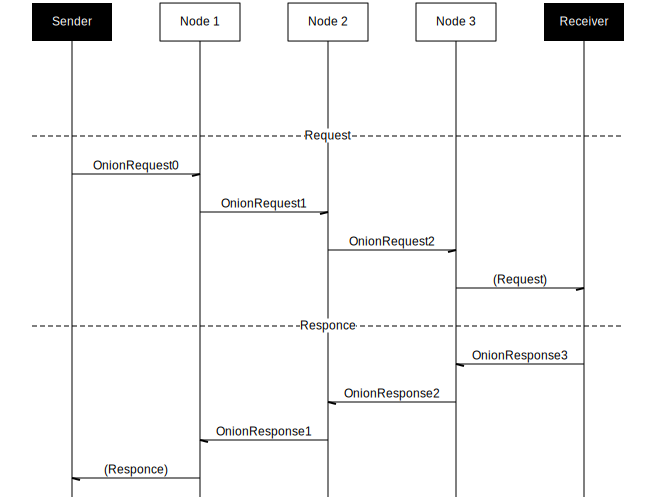
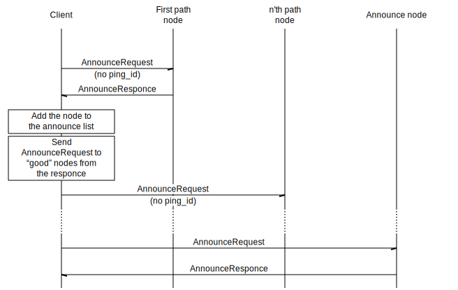

TODO
TODO: Fill it with info about libsodium
TODO: copy from https://toktok.ltd/spec#crypto
TODO: copy from https://toktok.ltd/spec#dht
TODO: copy from https://toktok.ltd/spec#tcp-server
TODO
This is a description of onion layer in Tox.
Paths
Onion routing can be described using this chart:

To send a message via an onion path, first we construct the path by choosing three random nodes. Then, we put the message in several layers:
OnionRequest2contains the address of the message receiver and the message encrypted with the third's node keyOnionRequest1contains the address of the second node andOnionRequest2encrypted with the second's node key, andOnionRequest0contains the address of the first node and encryptedOnionRequest0
A node that belongs to the path receives a message, decrypts the payload, attaches OnionReturn and sends the result to the next node in the path.
An OnionReturn of the n'th node is the pair of IP_Port and OnionReturn of the previous node (if it exists), encrypted with the n'th node's key. It allows the receiver to send a response to the sender using the same onion path.
Client announce
An iteration of self announce:
- Clean up the
announce_listfrom timeouted nodes - For node
ninannounce_list:- If the node is out of ping credit, skip it
- Check whether the node is not announced, announced or stable
- If it's time to send an announce request, send it to the node
- Update time and increment
ping_debtof the node
- Update time and increment
- If
announce_listis not full, choose whether we should send to a path node- If so, send the announce request to a random path node (ping_id = 0)
A node is considered timeouted if the last ping was more than NODE_TIMEOUT seconds ago and the node is out of ping credit.
A node is out of ping credit if ping_debt of the node is more than MAX_NODE_PINGS.
A node is announced if is_stored is not 0 and client's self_paths contains a path with the path_num of the node. An announced node is called stable if the node by itself is stable and the corresponding path is stable.
A node is stable by itself if it was added more than TIME_TO_STABLE seconds ago, its ping_debt is zero, the node was pinged less than NODE_TIMEOUT seconds ago.
A path is called stable if it was created more than TIME_TO_STABLE seconds ago, the usage_debt of the path is zero and the path was not used for more than PATH_TIMEOUT.
It is time to send an announce request if:
- A node was pinged more than
intervalseconds ago, whereintervalis one ofANNOUNCE_INTERVAL_NOT_ANNOUNCED,ANNOUNCE_INTERVAL_ANNOUNCED,ANNOUNCE_INTERVAL_STABLE, depending on the node type - Or the last announce was more than
NODE_PING_INTERVALseconds ago andrandom(MAX_ONION_CLIENTS_ANNOUNCE - i) == 0, whereiis the index of the node in theannounce_list
The process of sending a self announce request to a node is the following:
- First, get a random path with a given
path_num. - Store a sendback in
announce_ping_array, getting the sendback_id - Construct an announce request payload with
search_id = real_pkdata_pk = temp_pkping_id = ping_idsendback_data = sendback_id- Where
real_pkis the real public key,temp_pkis the temporary public key of the onion client.
- Where
- The payload is encrypted using
{dest_pk, real_sk}, wheredest_pkis the public key of the destination,real_skis the real secret key - Construct the request with the payload and
{pk = real_pk} - Send the request via the onion path
Getting a random path:
- If
path_numis notNone, setpath_index = path_num % NUMBER_ONION_PATHS. Otherwise, setpath_index = random(0..NUMBER_ONION_PATHS) - If
path_list[path_index]is timed out or doesn't exist:- Get
ONION_PATH_LENGTHrandom path nodes - Check whether the last node belongs to some path
- If yes, then use that path
- If not:
- Create a new onion path
- Set times for the path
- Set
path_num = r(random_u32(), NUMBER_ONION_PATHS) + path_index, where \(r(a, n) = a - (a \bmod n)\) – a “modulo rounding” function
- Get
- Otherwise, just use the existing path
- If the path is not out of usage credit, update
last_path_used - Increment the usage debt of the path
- Return the path
An announce response is handled in the following way:
- Get the sendback from
announce_ping_arrayusing thesendback_data - Decrypt the payload using
{sb.node.pk, real_sk}, wheresb.node.pkis the public key stored in the sendback,real_skis the real secret key - Set path timeouts using
{sb.friend_num, sb.path_num} - Add the announce node to
announce_list - Add the node to
path_nodes - Get nodes from the payload and ping them (if any)
The process of pinging a node is the following:
- Clean up
announce_listfrom timeouted nodes - A node in the payload is pinged if:
- It is closer to us than nodes in the
announce_listor the list is not full - And it doesn't belong to the list
- And it is good to ping
- It is closer to us than nodes in the
- Pinging is sending an announce request with
ping_id = 0via a random path
A node is good to ping if this is not the last pinged node unless the node was pinged more than MIN_NODE_PING_TIME ago.
A sequence chart for the beginning of self announce process (messages are sent via onion):

Friend search and DHTPK announce
The overall process has two steps:
- First, we use announce requests to find announce nodes that stores paths to our friend
- This process is similar to the announce process
- Then, we send (via onion)
DataRequestto found announce nodes
This is the chart of the second step:

Specifically:
- We start with constructing
DhtPkData:no_replay = nowwherenowis the current timedht_pk = dht_pkwheredht_pkis our dht public keynodes = closestwhereclosestis a list of closest to us dht nodes
- Serialize it into bytes and send as an onion data or via dht
The process of sending onion data is the following:
- The
client_listof a friend is cleaned up of timeouted nodes - Good nodes are with
is_stored != 0 - It should be more than
(num_nodes - 1) / 4 + 1good nodes to continue wherenum_nodesis the number of nodes inclient_list - Generate a random nonce
- The data is encrypted using friend's real public key, our real secret key and the nonce
- Construct
OnionData:real_pkis our real public keydht_pk_datais the encrypted data
- For each good node:
- Get a random friend path
- Construct a
DataRequest:dest_pk = friend.real_pknonce = nonce. The same nonce that we used beforetemp_pk = random_pk. We generate a random keypair- The
payloadis the onion data encryped with the node's data public key and the random secret key, using the samenonce
- Send the request via the onion path
Notes on data structures
Both path_nodes and announce_list are arrays of limited size. But the way they are updated are different.
When path_nodes is full, adding a new element replaces an old one in a circular manner: first adding an element replaces path_nodes[0], then path_nodes[1], and so on til we get to the end of the array. After that, we begin again with path_nodes[0].
announce_list is different. It is sorted by distance to real our public key. When an element is added, it is checked against the farest node. If the element is closer to us than the node, the node is removed and the element is inserted. Otherwise, the element is simply discarded.
Some packet data structures:
struct DhtPkData {
no_replay: u64,
dht_pk: PublicKey,
nodes: Vec<PackedNode>,
}
layout DhtPkData {
u8 = ONION_DATA_DHTPK,
u64,
[u8; PUBLIC_KEY_SIZE],
[[u8; PACKED_NODE_SIZE]; 0..MAX_SENT_NODES]
}
Toxcore notes
In the C implementation, ping_debt and usage_debt are called unsuccessful_pings and last_path_used_times correspondingly. New names are chosen to represent the meaning of these variables more clearly.
TODO
This is a description of packets of messenger layer of Tox.
FILE_SENDREQUEST
This packet is used to initiate transferring sender's data file or avatar file to a friend. Toxcore doesn't accumulate file chunks, accumulating file chunks is role of client.
Serialized form:
| Length | Content |
|---|---|
1 | 0x50 |
1 | file_id |
4 | file_type(0 = data, 1 = avatar image data) |
8 | file_size |
32 | file_unique_id(a random bytes) |
0.255 | file_name as UTF-8 C string |
file_type and file_size are sent in big endian format.
FILE_DATA
FileData packet is used to transfer sender's data file to a friend.
It holds file_id which is one byte long, means that a tox client can send maximum 256 files concurrently.
Also it means that two friends can send 512 files to each other concurrently.
Serialized form:
| Length | Content |
|---|---|
1 | 0x52 |
1 | file_id |
0..1371 | file data piece |
One FileData packet can hold maximum 1371 bytes. To send whole file which is bigger than 1371 bytes, messenger's file sending function need to be called many times. Multiple calling file sending function of messenger must be done by the user of tox protocol, Tox-rs provides only an api for sending a chunk of file data. Also, assembling chunks of file data received by tox protocol must be done by the user of tox protocol. File sending module always checks the length of sent bytes by length of file to send. When the sent bytes exceed the length of file to send, it must stop sending file data.
FILE_CONTROL
This packet is used to control transferring sender's file to a friend. If a peer of connection wants to pause, kill, seek or accept transferring file, it must use this packet.
Serialized form:
| Length | Content |
|---|---|
1 | 0x51 |
1 | Whether it is sending or receiving, 0 = sender, 1 = receiver |
1 | file_id |
1 | Control type: 0 = accept, 1 = pause, 2 = kill, 3 = seek |
8 | Seek parameter which is only included when control type is seek(3) |
When messenger layer is called by user using FILE_CONTROL, it checks:
- Sending direction value is
0or1means 0 = sender, 1 = receiver, others = error - Retrieves
file transfer objectwhich holds info of file transferring, if it fails then send FileControl packet to a friend to kill the session. file transfer objectis managed byfile_idandfriend_idandsending direction.
FILE_CONTROL do following things:
-
Accept: Accept the request of file sending from a friend. It does:
- checks if status is not
Acceptedif it is notAcceptedthen- change status to
Transferring
- change status to
- else checks:
- if status is
Pause by friendthen toggle status ofPause by friend - else error because friend asked me to resume file transfer that wasn't paused.
- if status is
- updates
file transfer object
- checks if status is not
-
Pause: Pause the transfer. It does:
- checks if pause status is
Paused by friendor transfer status is notTransferringthen error because friend asked me to pause transfer that is already paused. - toggles pause status
- updates
file transfer object
- checks if pause status is
-
Kill: Kill the transfer session. It does:
- updates
file transfer object - set transfer status to
None - decreases count of friend's number of sending files
- updates
-
Seek: Seek to the position. It does:
- checks if the transfer status is
Acceptedand the sender of this packet is receiver of file data- else error because Seek must be used to session
Acceptedand Seek packet can only be sent by receiver to seek before resuming broken transfers.
- else error because Seek must be used to session
- checks if the position exceeds the file size, if it exceeds
- error because seek position exceeds file size.
- set
requested positionandtransferred positionto seek position.
- checks if the transfer status is
-
else error because invalid file control command.
TYPING
This packet is used to transmit sender's typing status to a friend.
Serialized form:
| Length | Content |
|---|---|
1 | 0x33 |
1 | Typing status(0 = not typing, 1 = typing) |
It checks if the data is one bytes, and update typing status to the value of data.
ACTION
This packet is used to transmit sender's action message to a friend. Here, action message is a something like an IRC action.
Serialized form:
| Length | Content |
|---|---|
1 | 0x41 |
0..1372 | UTF8 byte string |
It checks if the action message is empty, if it is then do nothing else sends the action message to the friend. It is C string.
MESSAGE
This packet is used to transmit sender's message to a friend.
Serialized form:
| Length | Content |
|---|---|
1 | 0x40 |
0..1372 | UTF8 byte string |
There is no zero-length or empty string allowed and if it is then do nothing. It is C string.
STATUS_MESSAGE
This packet is used to transmit sender's status message to a friend. Every time a friend become online or my status message is changed, this packet is sent to the friend or to all friends of mine.
Serialized form:
| Length | Content |
|---|---|
1 | 0x31 |
0..1007 | UTF8 byte string |
If packet is received then call registered callback function to change the status message of the friend and change the status data for the friend. It is C string.
USER_STATUS
This packet is used to transmit sender's status to a friend. Every time a friend become online or my status is changed, this packet is sent to the friend or to all friends of mine.
Serialized form:
| Length | Content |
|---|---|
1 | 0x32 |
1 | My status(0 = online, 1 = away, 2 = busy) |
When a node receives this packet, it call registered callback function to change the status of the friend.
MSI
MSI(Media Session Interface) is a protocol to manage audio or video calls to a friend(s). Payload of a msi packet consists of three kinds of sub-packets: request, error, capabilities.
-
Request does:
- init_call.
- push: start call or change capabilities or report error.
- pop: end call or adopt capabilities or process error.
-
Error is used to report errors during av-call setup, running, terminating.
-
Capabilities hold the ability of node related with audio, video.
-
One msi packet must have at least 2 sub-packets: request and capabilities(error sub-packet is optional).
- Optional means if there is no error then msi packet need not include error sub-packet in its payload.
-
When a node receives msi packet, it performs the request sub-packet with capabilities sub-packet.
- For example, if the request is REQU_INIT and capabilities is full option then node initializes a call with capabilities of sending audio, receiving audio, sending video, receiving video.
- During REQU_INIT, if the node's capabilities changed to audio only, then the node sends REQU_PUSH with capabilities of sending audio and receiving audio(2 sub-packets).
- If there is an error for changing capabilities, the msi packet would include error sub-packet, so there are 3 sub-packets in payload of a msi packet(REQU_PUSH, capabilities, error).
-
A node holds its capabilities in local variable, if the capabilities of received packet differ from saved value then apply changes and update local variable.
-
If error sub-packet is included in received msi packet then process error.
Sub-packet: kind [1 byte], size [1 byte], value [$size bytes] : but actually size is always 1, so a sub-packet is always 3 bytes long
- kind: one of Request, Capabilities, Error
- size: the length in byte of value(always 1)
- value: enum value depending on kind
Payload: |sub_packet| |...{sub-packet}| |0|
Serialized form:
| Length | Content |
|---|---|
1 | 0x45 |
0..255 | payload |
Sub-packet serialized form:
| Length | Content |
|---|---|
1 | kind(1 = Request, 2 = Error, 3 = Capabilities) |
1 | size(always 1) |
1 | value(it depends on kind) |
If kind is Request then value is one of these
- REQU_INIT = 0
- REQU_PUSH = 1
- REQU_POP = 2
If kind is Error then value is one of these
- MSI_E_NONE = 0
- MSI_E_INVALID_MESSAGE = 1
- MSI_E_INVALID_PARAM = 2
- MSI_E_INVALID_STATE = 3
- MSI_E_STRAY_MESSAGE = 4
- MSI_E_SYSTEM = 5
- MSI_E_HANDLE = 6
- MSI_E_UNDISCLOSED = 7
If kind is Capabilities then value is bitwise-OR of these
- MSI_CAP_S_AUDIO = 4, // sending audio
- MSI_CAP_S_VIDEO = 8, // sending video
- MSI_CAP_R_AUDIO = 16, // receiving audio
- MSI_CAP_R_VIDEO = 32, // receiving video
Examples of payload are
- Request(REQU_INIT) + capabilities(audio & video) = 6 bytes
- Request(REQU_INIT) + capabilities(audio) + error = 9 bytes
- Request(REQU_PUSH) + capabilities(video) + Request(REQU_POP) + error = 12 bytes
- Request(REQU_PUSH) + Request(REQU_POP) + Request(REQU_INIT) + capabilities(audio) + error(MSI_E_SYSTEM) + error(MSI_E_HANDLE) = 18 bytes
This packet structure can permit for a node to send multiple sub-packets in one packet.
For example a node can send packet to a friend to start call with capabilities and errors.
The node receiving this packet also can do multiple action on sub-packets in a packet.
Because payload size is 255 bytes long, we can send maximum 255 / 3 = 85 sub-packets in a packet.
If there are same kind of sub-packets in a packet, the last sub-packet will replace the previous sub-packet. so the result of parsing above examples are
- Request(REQU_INIT) + capabilities(audio & video)
- Request(REQU_INIT) + capabilities + error
- Request(REQU_POP) + capabilities + error
- Request(REQU_INIT) + capabilities + error(MSI_E_HANDLE)
After parsing payload, there are only last sub-packets of each kind.
CallState
A node maintains internal call_state variable, call_state is one of these
- MSI_CALL_INACTIVE = 0 // Default
- MSI_CALL_ACTIVE = 1
- MSI_CALL_REQUESTING = 2 // when sending call invite
- MSI_CALL_REQUESTED = 3 // when getting call invite
On receiving this packet, a node does:
- parse packet: parse it to store sub-packets to data structures.
- Data structure which holds the result of parsing has 3 fields
Requestholds request sub-packetErrorholds error during processing sub-packet.Capabilitiesholds the abilities related with audio or video of a friend.
- If there are same kind of sub-packets in a packet, the last sub-packet will replace the previous one.
- Data structure which holds the result of parsing has 3 fields
- Process the
Requestsub-packet in the packet.- Init: init a msi session.
- Check if
Capaboilitesis empty, if it is then return with error(MSI_E_INVALID_MESSAGE). - If call_state is
MSI_CALL_INACTIVEthen requests a call to a friend. - If call_state is
MSI_CALL_ACTIVEthen sends packet containing capabilities of us. This is the situation of a friend re-call us but we are not terminated with previous call. - If call_state is
MSI_CALL_REQUESTINGorMSI_CALL_REQUESTEDthen return with error(MSI_E_INVALID_STATE).
- Check if
- Push: Starts a new call to a friend or change capabilities.
- Check if
Capaboilitesis empty, if it is then return with error(MSI_E_INVALID_MESSAGE). - If call_state is
MSI_CALL_ACTIVEthen check if capabilities are changed from previous value, if it is then change current call's capabilities. - If call_state is
MSI_CALL_REQUESTINGthen starts a new call - If call_state is
MSI_CALL_INACTIVEorMSI_CALL_REQUESTEDthen ignore it.
- Check if
- Pop: Ends current call
- If there is a error command in the packet then terminates current call.
- If call_state is
MSI_CALL_INACTIVEthen it is a impossible case. So, terminates process. - If call_state is
MSI_CALL_ACTIVEthen it is a hang-up of a friend. So, ends call. - If call_state is
MSI_CALL_REQUESTINGthen it is a rejection of call by a friend. So, ends call. - If call_state is
MSI_CALL_REQUESTEDthen it is a cancelling of a call request by a friend. So, ends call.
- Init: init a msi session.
When we need to send a packet to a friend, a node does:
- creates a new object which is one of these:
- Init
- Push
- Pop
- adds error sub-packet if there is an error
- adds capabilities sub-packet of us
- creates a msi packet using above object and sends it using
NetCrypto
ONLINE
Sent to a friend when a connection is established.
Serialized form:
| Length | Content |
|---|---|
1 | 0x18 |
OFFLINE
Sent to a friend when deleting the friend. It the friend is a member of a groupchat, we show the node as offline.
Serialized form:
| Length | Content |
|---|---|
1 | 0x19 |
NICKNAME
Used to send the nickname of the peer to others. Whenever a friend comes online, this packet should be sent or whenever my nickname is changed, this packet should be sent.
Serialized form:
| Length | Content |
|---|---|
1 | 0x30 |
0..128 | UTF-8 C string |
TODO